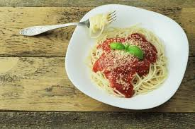

Spaghetti

Home
Spaghetti is a traditional pasta dish made up of spaghetti noodles and tomato sauce.
It's a common Italian dish and is relatively easy to make.
Ingredients
- 1 box spaghetti noodles
- 1 lb ground beef
- 15 oz crushed tomatoes
- 1 clove garlic
- 1 medium onion
- Oregano
- Parmesean cheese
Steps
- Cook ground beef over medium high heat. Drain any excess fat.
- Add garlic and onions. Cook until garlic is fragrent and onions are transluscent.
- Add crushed tomatoes and oregano. Simmer for 20-30 minutes.
- Boil spaghetti noodles for 10 minutes. Drain noodles.
- Top spaghetti with tomato sauce and parmesean. Serve immediately.